UX Case Study Mobile Design Project
Ontdek je volgende favoriete game
Ontwerp een app die een duidelijk overzicht biedt aan gamers van de games die binnenkort uitkomen.
Een enquête onder 18 respondenten vormde de basis van mijn onderzoek. Hiermee heb ik waardevolle informatie verkregen over welke elementen belangrijk zijn in een gaming-gerelateerde app en welke websites of apps de doelgroep al gebruikt. Om een breder beeld te krijgen van het aankoopgedrag van gamers, heb ik vervolgens via deskresearch aanvullende informatie verzameld.
71% van de 18-24-jarige mannen speelt op console of PC.
Ipsos Connect: The New Faces of Gaming
De mannelijke 18-34-jarige gamer:
83%
Speelt het liefste action games
66%
Speelt samen met vrienden
ESA Essential Facts
De focus bij deze eerste iteratie schetsen lag op het leggen van de basis van het toevoegen-, bijhouden en analyseren van uitgaven en het helpen afbouwen van schulden.
Daarnaast is besloten om op de 'Home-pagina' informatie weer te geven over games die de gebruiker zelf volgt, maar ook games die over het algemeen populair zijn per week.
Op de 'Following-pagina' wordt bij elke game een timer weergegeven wanneer het spel uitkomt.
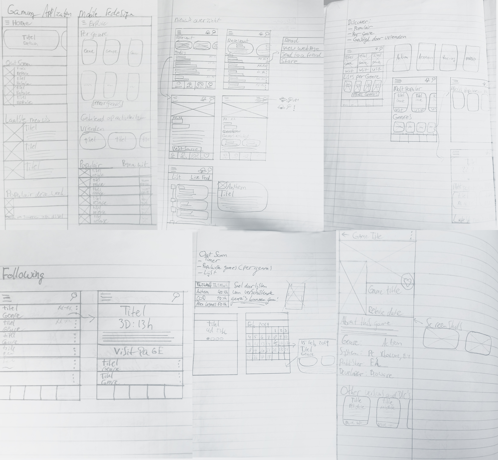
Eerste iteratie schetsen: Ontdekken nieuwe gamesBij de tweede iteratie schetsen is de focus meer gelegd op het gebruiken van verschillende cards. Aan de hand hiervan is de lay-out verbeterd op de 'Nieuws-pagina', 'Discovery-pagina' en 'Community-pagina'
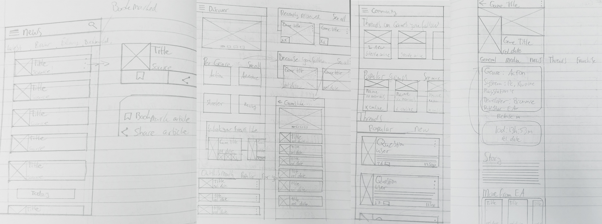
Tweede iteratie schetsen: Verbetering 'Nieuws-pagina', 'Discovery-pagina' en 'Community-pagina'Verbeterde homepagina met teller en nieuwsartikelen, gemakkelijk nieuwe games ontdekken per genre en met andere gamers erover praten.
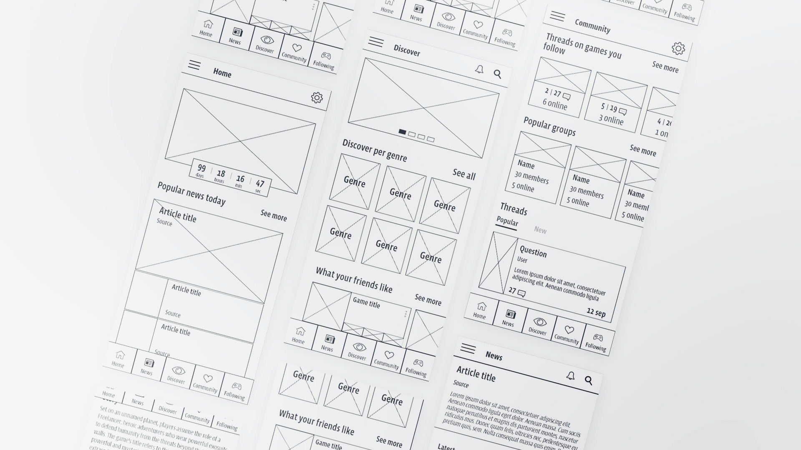
Wireframes: Verbeterde homepagina, games ontdekken per genre, praten met anderen op 'Community-pagina'en behaal nieuwe highscores!
Bekijk in een overzicht hoe lang het duurt voordat jouw favoriete games uitkomen, krijg het laatste nieuws mee en kom te weten of er een nieuwe trailer uit is gekomen voor een van de games die je volgt!
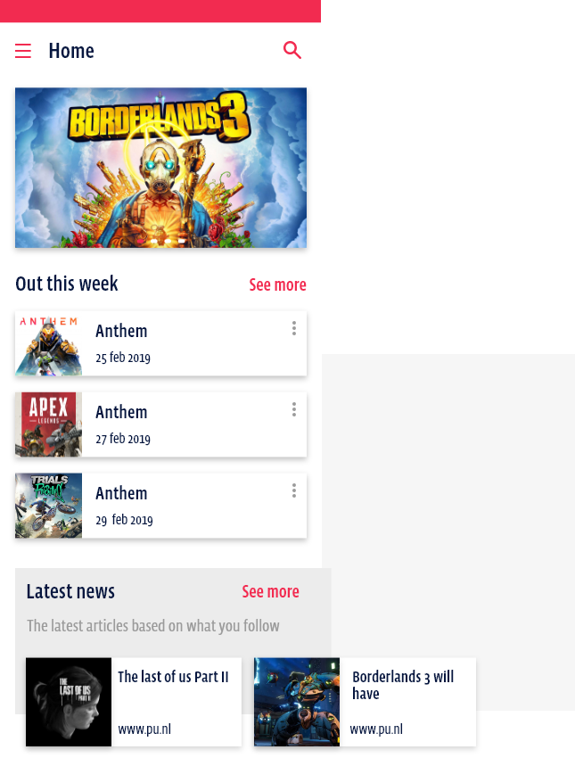
Lees het laatste gaming-gerelateerde nieuws in een handig overzicht. Je kan zelf bepalen of je de meest populaire artikelen leest, de meest recente, of juist artikelen die zijn geschreven over de games die jij volgt. Mocht je een artikel later willen lezen, kan je deze opslaan in je Bookmark lijst.
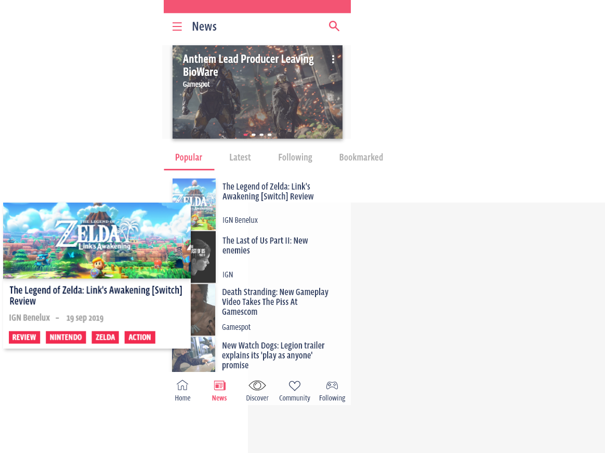
Ontdek nieuwe games door te bekijken wat er binnenkort uit wordt gebracht , sorteer games op genre en krijg aanbevelingen gebaseerd op jouw persoonlijke voorkeuren en activiteit.
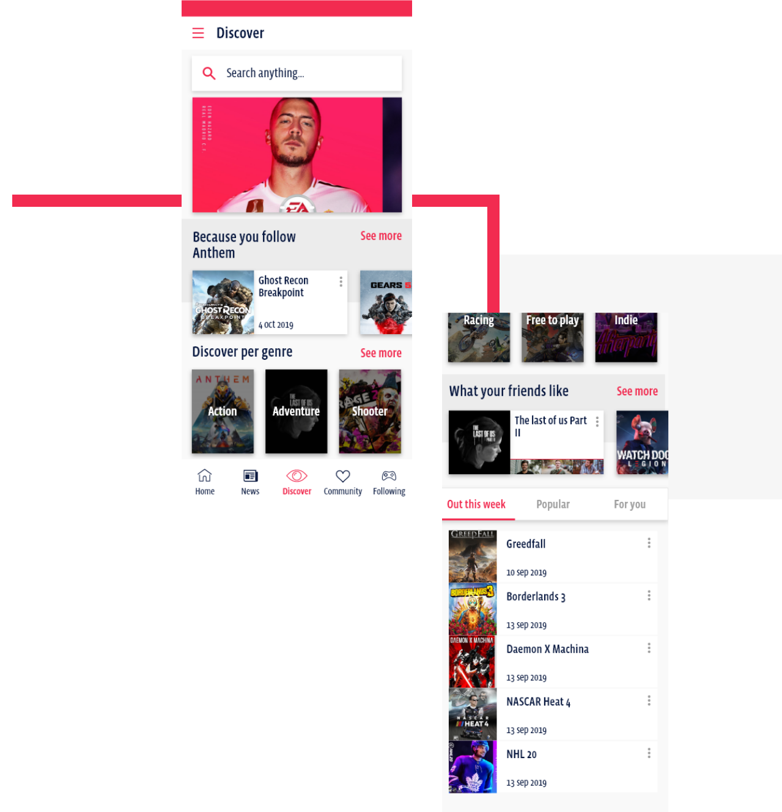
Krijg meer te weten over een spel door bestaande threads te bekijken of zelf een thread te beginnen. Krijg meer te weten over een spel door bestaande threads te bekijken of zelf een thread te beginnen.
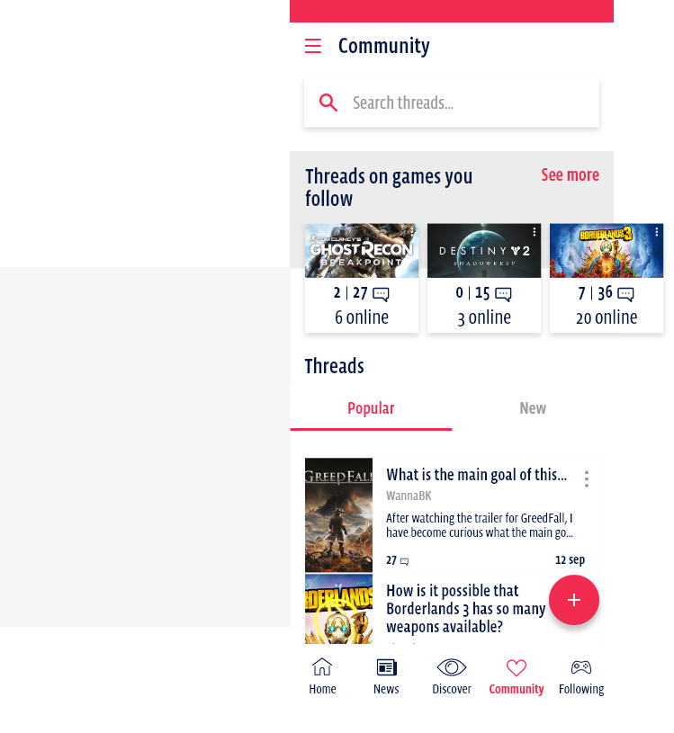
Krijg een duidelijk overzicht van op welke dagen er deze maand games uitkomen. Zie daarnaast welke games die je volgt binnenkort uitkomen, of bekijk de volledige lijst.
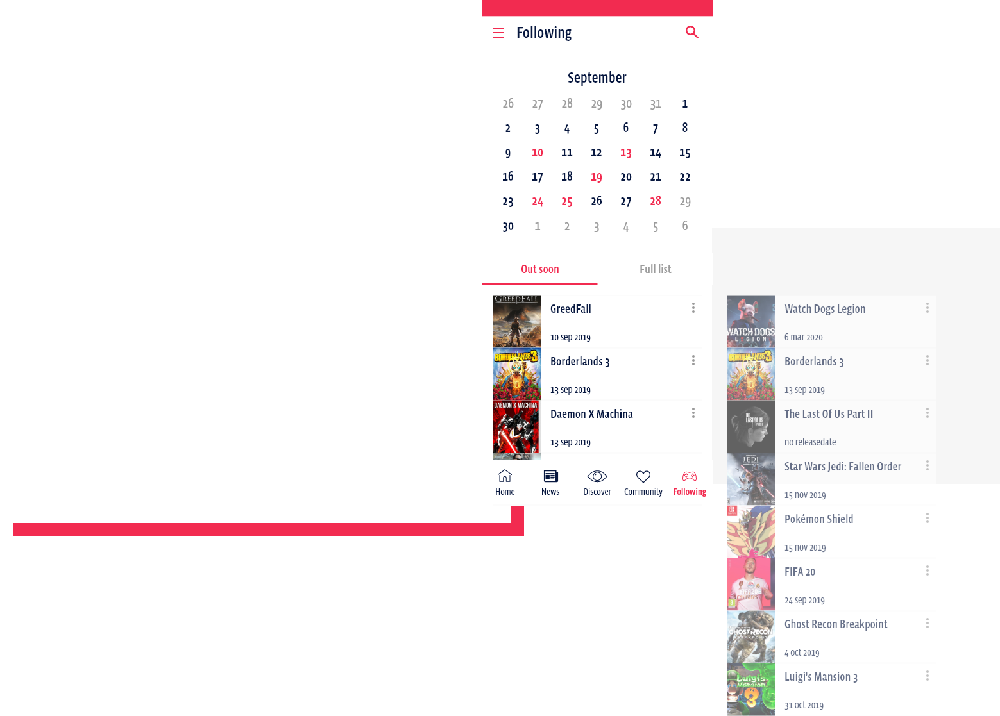
Klaar voor de volgende case study?
en behaal nieuwe highscores!
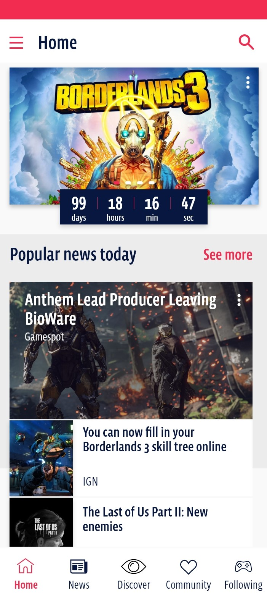
Bekijk in een overzicht hoe lang het duurt voordat jouw favoriete games uitkomen, krijg het laatste nieuws mee en kom te weten of er een nieuwe trailer uit is gekomen voor een van de games die je volgt!
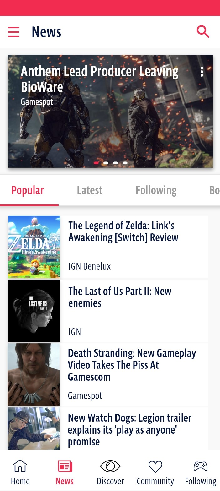
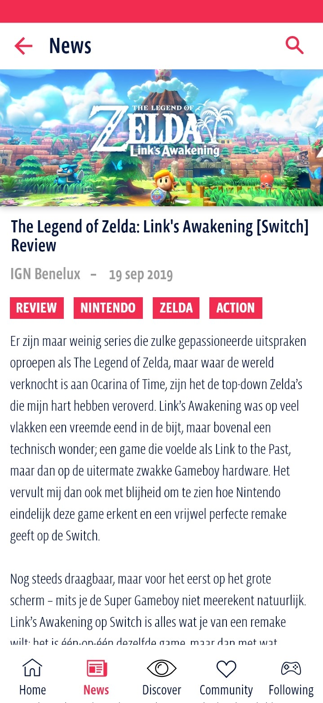
Lees het laatste gaming-gerelateerde nieuws in een handig overzicht. Je kan zelf bepalen of je de meest populaire artikelen leest, de meest recente, of juist artikelen die zijn geschreven over de games die jij volgt. Mocht je een artikel later willen lezen, kan je deze opslaan in je Bookmark lijst.
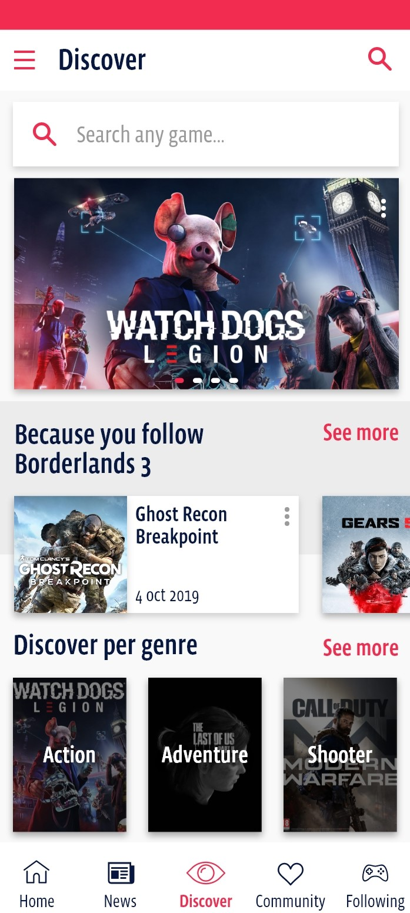
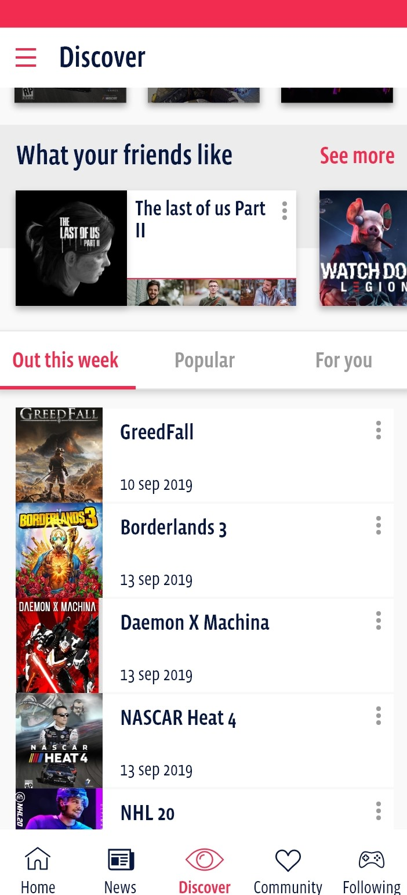
Ontdek nieuwe games door te bekijken wat er binnenkort uit wordt gebracht , sorteer games op genre en krijg aanbevelingen gebaseerd op jouw persoonlijke voorkeuren en activiteit.
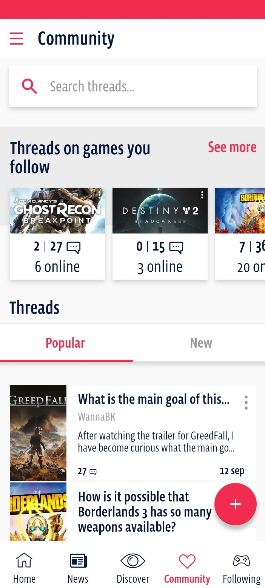
Krijg meer te weten over een spel door bestaande threads te bekijken of zelf een thread te beginnen. Krijg meer te weten over een spel door bestaande threads te bekijken of zelf een thread te beginnen.
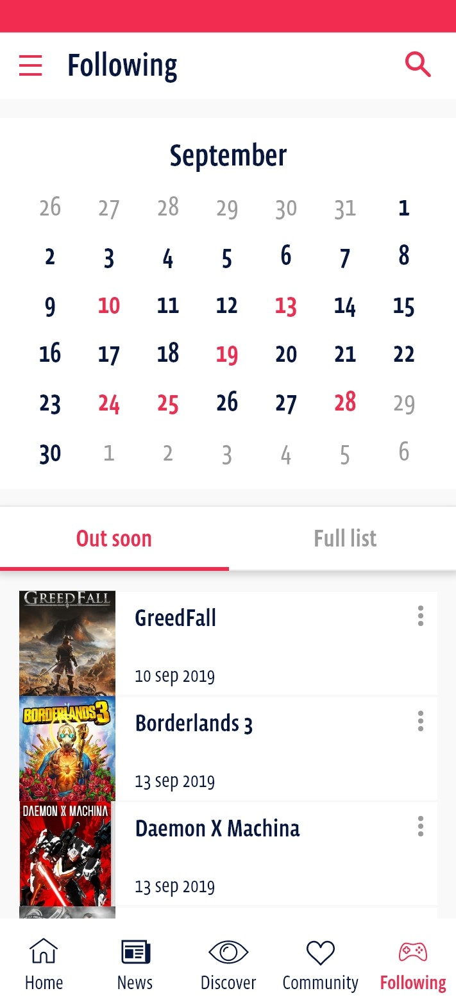
Krijg een duidelijk overzicht van op welke dagen er deze maand games uitkomen. Zie daarnaast welke games die je volgt binnenkort uitkomen, of bekijk de volledige lijst.
Klaar voor de volgende case study?
Reisapp waar de community centraal staat